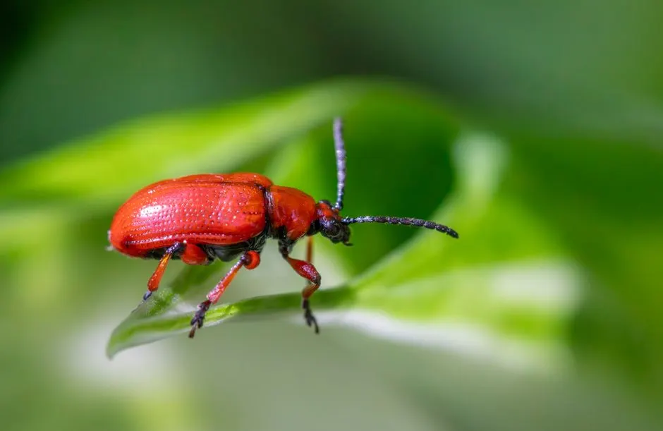
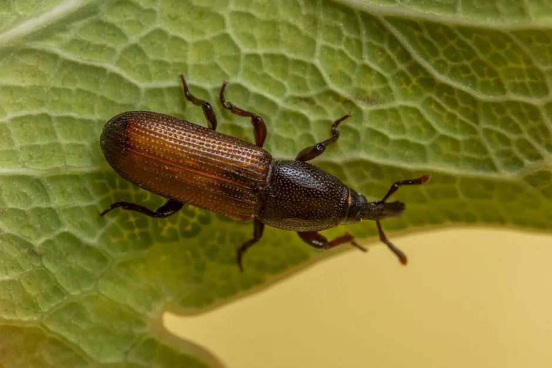
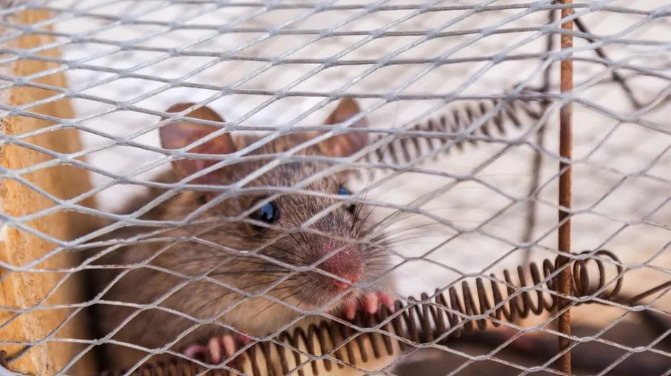

Same-day ant extermination in Corona, California, with a written warranty
Ant Control Corona CA That Clears the Whole Colony
If ants are marching through your kitchen, you need ant control Corona CA that kills the colony, not just the ants you can see. Our licensed technicians handle ant extermination Corona CA for homes and businesses across Riverside County, from Downtown Corona to South Corona. We inspect, treat, and seal entry points in one visit, then back the work with a written warranty. Call 951-257-7625 and we will be there today.
Live phone supportUpfront optionsBacked workmanship
What's included
What Our Ant Control Service Includes
Every ant control Corona CA job includes a full inspection, targeted treatment, entry point sealing, and a follow-up visit. Here is what is covered in the standard service, and what we can add if you need more.
Full Interior and Exterior Inspection
We check your kitchen, bathrooms, garage, attic, and the entire exterior perimeter. We look for trails, nesting sites, moisture issues, and entry points. You get a written summary of what we found and what we treated.
Colony-Level Baiting
We place bait gel in cracks, crevices, and wall voids where ants travel. The bait is carried back to the colony and shared, which kills the queen and the nest. This is the core of the treatment and the reason it works.
Perimeter Insecticide Treatment
We apply insecticide along the foundation, around windows and doors, and at pipe penetrations. This creates a barrier that stops ants from entering. We use products from BASF and Syngenta that are labeled for residential use.
Entry Point Sealing
We seal gaps with sealants and exclusion mesh, focusing on the spots ants actually use. This includes utility penetrations, window frames, and foundation cracks. Sealing is what prevents the next infestation.
Follow-Up Visit and Report
We return 7 to 14 days after the initial treatment to check bait consumption and re-treat if needed. You get a written report after every visit, and the warranty stays active as long as you keep your service plan.
Service overview
Ant Control Corona CA: What the Job Actually Involves
Ant control Corona CA is a targeted pest management service that eliminates active ant colonies, treats trailing routes, and blocks the entry points ants use to get inside your home. We start with a full inspection of your kitchen, bathrooms, garage, and exterior perimeter, then apply bait gel, insecticide, and diatomaceous earth where ants actually travel. Most homes need one treatment plus a follow-up, and the work is done by a licensed pesticide applicator who knows exactly which species you are dealing with.
Corona sits in Riverside County, where hot, dry summers push ants indoors looking for water and shade. Argentine ants, fire ants, and carpenter ants all show up here, and each one needs a different approach. If you have been searching for ant pest control near me Corona, the fix is not a can of spray from the hardware store. It is a full perimeter treatment and colony-level baiting program that keeps them from coming back.

How we workWe verify the cause, compare realistic options, and confirm the repair before we leave.
The service timeline
Our Ant Control Process in Corona
The process flexes to the condition, but these checkpoints keep decisions clear.
Phone Inspection
We ask where you are seeing ants, how long they have been there, and what you have already tried. That tells us the likely species and the right treatment plan before we ever get to your door. Takes about 10 minutes.
On-Site Assessment
A licensed technician walks your kitchen, bathrooms, garage, and exterior perimeter with a UV flashlight and inspection mirror. We check for moisture, entry points, and nesting sites. This takes 20 to 30 minutes for a typical Corona home.
Targeted Treatment
We apply bait gel in cracks and crevices, spray the perimeter with insecticide, and place bait stations where ants are trailing. Diatomaceous earth goes into wall voids and behind appliances. The treatment itself takes 45 to 90 minutes.
Entry Point Sealing
We seal gaps around pipes, windows, and foundations with sealants and exclusion mesh. This is what stops the next colony from moving in. We show you every spot we sealed so you know what to watch.
Follow-Up and Monitoring
We schedule a follow-up visit 7 to 14 days out to check bait consumption and re-treat if needed. After that, monthly or quarterly monitoring keeps your home protected year-round. You get a written report after each visit.
Tools & methods
Tools and Methods We Use for Ant Control
Purpose-built equipment, used by trained technicians, so the job is done accurately the first time.
Bait Stations
Tamper-resistant stations placed in kitchens, bathrooms, and along exterior walls. Ants enter, take the bait, and carry it back to the colony.
Insecticide Sprayers
Power sprayers and handheld units for applying residual insecticide along the perimeter, foundation, and entry points.
UV Flashlights
Used during inspections to spot ant trails, nesting sites, and pheromone lines that are invisible under normal light.
Moisture Meters
Detects damp wood and wall voids, which is where carpenter ants nest. Essential for finding hidden colonies.
Inspection Mirrors
Lets us see behind appliances, under sinks, and inside wall voids without tearing anything apart.
Glue Boards
Placed in areas where we need to monitor ant activity and confirm the colony has been eliminated.
Exclusion Mesh and Sealants
Used to seal gaps around pipes, windows, and foundations. This is the physical barrier that keeps new ants out.
Use cases
When to Call for Ant Control in Corona
These examples show how the service framework adapts rather than forcing every call through one repair.

Carpenter Ant Colony Removed from Garage
A homeowner in South Corona noticed sawdust near the garage baseboard and winged ants in spring. The wood was damp from a slow leak. A carpenter ant colony had been nesting in the wall for at least a season. → We located the nest with a moisture meter, treated the wood and wall void directly, and fixed the moisture source. The colony was eliminated within 10 days. The homeowner repaired the damaged wood, and we sealed the area.
Restaurant Passes Health Inspection Ant-Free
A restaurant in Downtown Corona failed a health inspection because of ants near the food storage area. They needed a fast fix and documentation. The ants were coming in through a gap behind the prep sink. → We treated after hours with bait stations and insecticide, sealed the gap, and provided a written service report. The restaurant passed the re-inspection three days later. No ants were found in the follow-up visit.
Problems we solve
Ant Problems We Solve in Corona Homes
Ants cause more than just annoyance. They contaminate food, damage wood, and can trigger allergies. Here are the most common ant problems we fix for Corona homeowners.
Ants trailing through the kitchen every morning
We find the entry point and the food source, then place bait gel along the trail. The ants carry it back to the colony, and the trail disappears within 7 to 10 days. We also seal the gap they are using to get in.
Carpenter ants damaging wood in walls and framing
We locate the nest using moisture meters and inspection mirrors, then treat the wood and wall voids directly. We also fix the moisture problem that attracted them, because carpenter ants need damp wood to nest.
Ants coming back a week after store-bought spray
Store sprays kill on contact but do not reach the queen. We use bait that worker ants carry back to the nest, which eliminates the colony at the source. That is why our treatment lasts and the spray does not.
Ants in the garage and around the foundation
We treat the exterior perimeter with insecticide, place bait stations along the foundation, and seal cracks with exclusion mesh. This stops the outdoor colony from sending foragers inside.
Pricing process
Ant Control Pricing in Corona
$180 - $450 for one-time treatment; $65 - $150 per visit for maintenance plans
Home Size
Larger homes have more perimeter to treat and more potential entry points. A 2,500-square-foot home takes longer to inspect and treat than a 1,200-square-foot condo. This is the biggest factor in the final price.
Infestation Severity
A single trail in the kitchen is a smaller job than ants in multiple rooms plus the exterior. Severe infestations may need additional bait stations and a second follow-up visit, which adds to the cost.
Number of Entry Points
Every gap we seal adds time and materials. Homes with many utility penetrations, cracks, and foundation gaps take longer to seal. We show you every spot we treat so you know what you are paying for.
Customer reviews
What Corona Customers Say
★★★★★
“We had ants in the kitchen for two weeks and tried everything from the store. Pest Control Pros came out the same day I called, treated the whole perimeter, and sealed the gap under the sink. The ants were gone in about a week. The technician showed me exactly what he did and where he placed the bait stations.”
★★★★★
“I was worried about the products because we have a dog and a toddler. The technician explained everything, used bait stations instead of sprays inside, and told us when it was safe to let the dog back in the yard. Two months later, no ants. Worth every penny.”
★★★★★
“We manage several rental units in Corona and had ants in three of them at once. The team treated all three in one afternoon and scheduled follow-ups. They sent written reports after each visit, which made it easy to show the owners. We have used them for cockroach and spider issues since.”
Questions before we arrive
Frequently Asked Questions About Ant Control in Corona

How much does ant control cost in Corona CA?
Most ant control jobs in Corona run $180 to $450 for a one-time treatment with a follow-up visit. Monthly or quarterly maintenance plans range from $65 to $120 per visit. The final price depends on your home size, the number of entry points, and how severe the infestation is. We give you the exact number before we start.
Why do I have ants in my Corona kitchen?
Ants come inside looking for water and food, especially during Corona's hot, dry months from May through October. A single crumb or a leaky pipe under the sink is enough to start a trail. Once a scout finds a food source, it lays a pheromone trail that brings the whole colony. Sealing entry points and removing the food source stops it.
What is the best ant exterminator in Corona?
The best ant exterminator is one that holds a California Structural Pest Control Board license, uses colony-level baiting instead of just perimeter sprays, and backs the work with a written warranty. Ask for the license number and the product labels before you hire anyone. We provide both on request and have the certifications to prove it.
How long does ant treatment take in Corona California?
A typical ant treatment takes 45 to 90 minutes for a single-family home in Corona. The inspection adds another 20 to 30 minutes. You can usually return to treated rooms within 30 minutes, once the product has dried. Follow-up visits take 20 to 30 minutes and are scheduled 7 to 14 days after the first treatment.
Related services
Other Pest Services We Offer in Corona

General Pest Control
Our general pest control plan covers ants, spiders, cockroaches, and rodents in one quarterly service. If you are already seeing ants, this is the best way to keep everything else out too. We treat the perimeter and interior on the same visit.
Cockroach Control
Cockroaches and ants often show up together because they both want moisture and food. Our cockroach control uses bait gel and insect growth regulators to break the breeding cycle. We treat the same cracks and voids we seal during ant service.
Spider Control
Spiders follow ants. When we eliminate the ant trail, the spider food source disappears, but we also treat webs and entry points directly. Our spider control covers black widows and common house spiders in garages, eaves, and storage areas.Ready when you are
Get Same-Day Ant Control Corona CA
Ants will not wait, and neither should you. Call 951-257-7625 now and we will schedule a same-day inspection for ant control Corona CA. Licensed, insured, and warrantied. If the ants come back, we come back.
Talk with the local team
Contact Our Corona Office
Call 951-257-7625 and a real person will answer, day or night. We book same-day inspections when you call before 2 p.m., and we run 24/7 emergency service for urgent problems. Tell us what you are seeing and we will tell you what it takes to fix it.
Live team · Open 24/7
Need pest control? Just call.
No forms and no waiting. Talk to a licensed Corona technician and get your free inspection booked in minutes.
951-257-7625 Tap to call now- Same-day appointments when you call before 2 p.m.
- Free inspection and written estimate
- Emergency response in under 90 minutes
- Licensed, insured and warrantied work
Prefer email? info@pestcontrolcoronaca.com